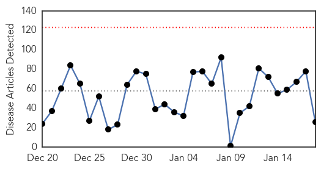
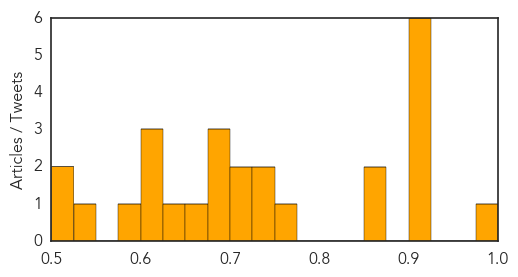
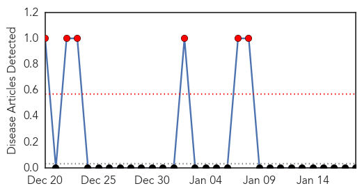

Unknown
30-Day Web Trend
0 alerts, 0 warnings

30-Day Twitter Trend
2 alerts, 0 warnings
Article Locations
Article Confidences
Top Articles:
- 0.991
- Sudan Vision Daily
- 0.917
- Chicago Tribune
- 0.917
- Chicago Tribune
- 0.917
- Chicago Tribune
- 0.917
- Chicago Tribune
- 0.917
- Chicago Tribune
- 0.915
- Veterinarians monitor pig virus that decimated herds in 2014; fewer cases reported this winter
- 0.866
- Late Hezbollah military leader's son killed in Israeli strike in Syria
- 0.866
- Shelling kills two children in eastern Ukraine
- 0.762
- IOM regional response to Ebola Crisis, 16 January 2015 - Sierra Leone
- 0.735
- Sri Lanka's kidney ills mystify: the scoop
- 0.726
- Mystery disease killing thousands of Sri Lankans - Emirates 24
- 0.712
- Mystery kidney killer spreads fear in Sri Lanka
- 0.708
- Quarantine area near Turkish Cypriot farm after Lumpy skin disease outbreak
- 0.688
- Mystery kidney killer spreads fear in Sri Lanka
- 0.680
- Mystery kidney killer spreads fear in Sri Lanka
- 0.678
- Malawi: Deadly floods menace tens of thousands
- 0.673
- The Westside StoryThe Westside Story
- 0.644
- The World Is Extremely Close To Eradicating A Human Disease For The 2nd Time In History
- 0.618
- Health officials encourage HPV vaccine during Cervical Health Awareness Month
- 0.607
- Local communities to be involved for registration of Aids patients
- 0.605
- 44% Patients Avoided an Unnecessary Surgery With a Second Opinion From... -- MUMBAI, January 19, 2015 /PR Newswire India/ --
- 0.595
- Morgellons: Diagnosis or Delusion?
- 0.542
- Health Ministry confiscates 19,960 Gala, Granny Smith apples in Sarawak
- 0.519
- Borneo , Malaysia, Sarawak Daily NewsBorneoPost Online
- 0.511
- Public outcry falls on deaf ears
Top Tweets:
-
No tweets found for Jan 18, 2015
West Nile Virus
30-Day Web Trend
6 alerts, 0 warnings

30-Day Twitter Trend
1 alerts, 0 warnings
Article Locations

Article Confidences

Top Articles:
-
No articles found for Jan 18, 2015
Top Tweets:
-
No tweets found for Jan 18, 2015